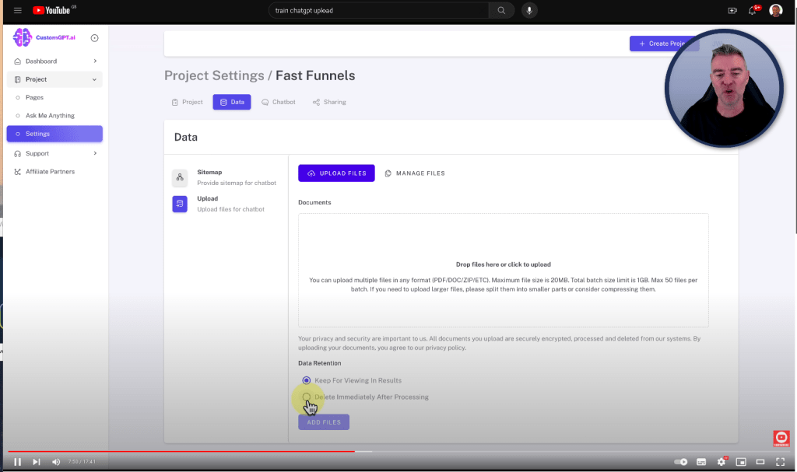

Training AI: A Deep Dive into the World of ChatGPT
Training AI: A Deep Dive into the World of ChatGPT
Welcome to the fascinating world of AI and language models! Today, we're diving into the intricacies of training AI models, specifically focusing on one of the most advanced language models in recent years: ChatGPT. Developed by OpenAI, ChatGPT represents a significant leap in natural language processing technology. Here, we'll explore how ChatGPT is trained, the challenges involved, and the ethical considerations that come with such technology.
Understanding ChatGPT
ChatGPT is a variant of the GPT (Generative Pre-trained Transformer) series, designed to generate human-like text based on the input it receives. It uses a machine learning technique known as deep learning, where a model learns to perform tasks by analyzing vast amounts of data. The "transformer" architecture behind ChatGPT is pivotal, focusing on understanding and generating language through components called attention mechanisms.
The Training Process
Training a model like ChatGPT involves several key steps:
-
Data Collection: The initial phase involves gathering a diverse and extensive dataset. This data often includes a wide range of internet text, from books and articles to websites and other digital content. The goal is to cover as many topics, styles, and nuances of language as possible.
-
Pre-training: Before being fine-tuned on specific tasks, ChatGPT undergoes pre-training. During this phase, the model learns the structure of language and how to generate coherent and contextually relevant text. This is done using unsupervised learning, where the model predicts the next word in a sentence without explicit instructions on what the right answer should be.
-
Fine-tuning: After pre-training, ChatGPT is fine-tuned on more specialized datasets. This helps the model adapt to specific types of queries and content it will encounter in real-world applications, such as customer service dialogues, technical support, or creative writing prompts.
-
Testing and Iteration: The final stages involve rigorous testing to ensure the model's performance is up to standards. This often includes both automated metrics and human evaluations. Feedback from these tests is used to make adjustments and improve the model iteratively.
Ethical and Societal Implications
Training AI models like ChatGPT isn't just a technical challenge; it also involves significant ethical considerations:
-
Bias and Fairness: AI models can inadvertently learn and perpetuate biases present in their training data. It's crucial to implement strategies to identify and mitigate these biases to ensure fairness and inclusivity.
-
Privacy: Handling large datasets responsibly is essential, especially when they contain potentially sensitive information. Ensuring privacy and compliance with data protection laws is paramount.
-
Misuse Potential: As with any powerful technology, there's a risk of misuse. Implementing safeguards against using the model for harmful purposes is an ongoing challenge for developers.
-
Environmental Impact: The computational resources needed to train large models like ChatGPT are significant. Addressing the environmental impact involves optimizing training processes and using more energy-efficient hardware.
Conclusion
The development and training of AI models like ChatGPT mark a significant advancement in our ability to interact with technology. As we continue to explore the potential of these models, balancing innovation with ethical responsibility remains a critical focus. By understanding both the technical and societal aspects of AI training, we can better appreciate the remarkable capabilities of these tools and the responsibilities they entail.
Exploring the future of AI, we see not just a path toward more sophisticated technologies but also a challenge to create a harmonious balance between technological advancement and ethical governance. The journey of AI is as much about understanding human values as it is about the bits and bytes that make it work.
Edit 2: Alternatives to load data in a practical manner

Imported from rifaterdemsahin.com · 2024